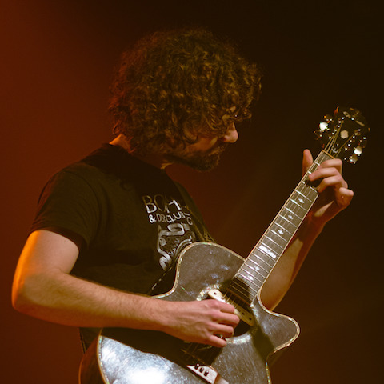
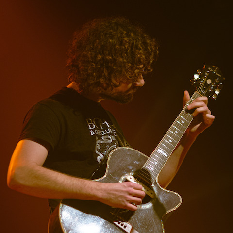

Photos


 

Crédits
Musique
Composition et écriture : Wyren
Arrangements : Wyren (voix, guitare acoustique/bouzouki irlandais), Hervé (guitare électrique), Gaël (basse, kalimba, synthé)
Mixage : Wyren
Videos
Cadrage : Coline Schmittag (Mirage) / Mélissande Valat De Croix (à venir)
Montage : Wyren et Mélissande Valat De Croix
Photos
Aleksandra Duncan (1, 3, 6)
Mélissande Valat De Croix (2, 4, 5)
Camila Vammale (7, 8, 9)
Logo
Wyren